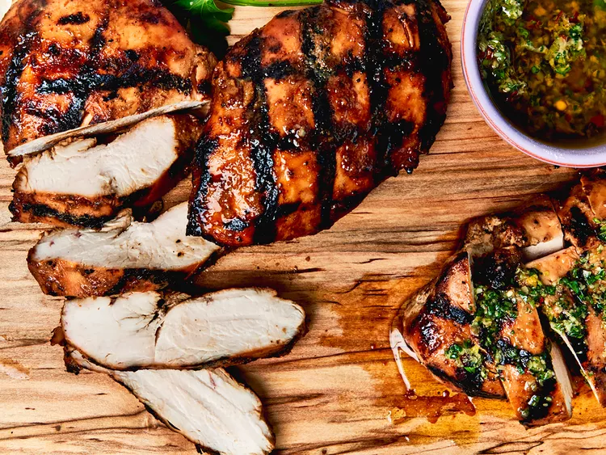

Grilled Chicken Breasts

Description
The best grilled chicken you'll ever make!
Ingredients
- 6 ounces of skinless, boneless chicken breast
- 1⁄4 cup of olive oil
- 3 tablespoons of Dijon mustard
- 2 tablespoons of soy sauce
- 2 tablespoons of lemon juice
- 3 garlic cloves
- 1 1⁄2 teaspoons of onion powder
- 1⁄2 teaspon of ground ginger
- Cooking oil
- 2 teaspoons of kosher salt
Steps
- Step 1: Trim excess fat from the chicken. Place a piece of parchment on top of each chicekn breast and tenderise the thick end of the chicken to flatten to an even thickenss.
- Step 2: Place the chicken in a large, resealable bag. Then add olvive oil, Dijon, honey, soy sauce, lemon juice, garlic, onion powder and ginger to the bag. Press any excess air out of the bag and seal the bag tightly.
- Step 3: Massage the chicken around in the bag until the marinade is fully incorporated and the chicken is well coated. Regrigerate for at least 4 hours or overnight, turning the bag occasionally.
- Step 4: Preheat the ove to 200 degrees celcius (400 degrees F)
- Step 5: Place the chicken top side down. Sprinkle evenly with salt. Cook until the chicken is cooked through and the internal temperatures is 74 degrees Celsius (165 degrees F).
- Step 6: Leave to stand for 10 minutes before serving.
Navigation Menu
Home